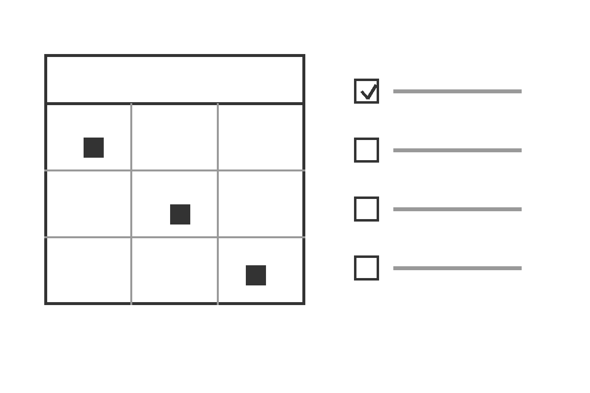

MyStudyPlanner
A simple website for keeping track of course tasks and deadlines.
This is my INFO1012 Assignment 3 project. I use it to write down each task with its course and due date, so I can see the whole week's work in one table instead of digging through messages and notes.

About the App
MyStudyPlanner is a small task manager I made for myself as a student. Each task has a title, course code, course name, due date, description and a notes field. That's basically everything I need to remember about an assignment, and it all sits in one row of a table.
It does three things:
- Lets me add a task as soon as it's announced. The form checks everything first, so I can't save an empty task or a due date that's already past.
- Shows all my tasks in a table sorted by due date, so the next deadline is always at the top.
- Lets me edit a task when something changes, or delete it when it's done. Deleting always asks for confirmation first.
Everything is saved in the browser's localStorage. There's no server involved, so my tasks stay on my own computer.
About Me
I'm a student taking INFO1012 this semester. I like seeing how systems are put together, and I'm interested in how organisations actually use software and data in practice.
I used to keep my deadlines in a paper notebook and usually remembered them about two days too late. Since starting this project I've been listing my tasks every Sunday instead, which honestly works a lot better.